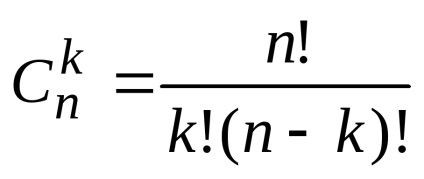

Калкулатор - биномни коефициенти
Резултат:
Информация за биномните коефициенти
Биномните коефициенти (също наричани комбинаторни коефициенти) са математични стойности, които се използват в комбинаториката и теорията на вероятностите за определяне на броя комбинации от елементи във множество. Тези коефициенти са от изключително значение при решаването на проблеми свързани с избор на елементи без повторение.
Биномният коефициент "n над k" се представя често със символа "C(n, k)" или "n choose k" и се дефинира по следния начин:
C(n, k) = n! / (k! * (n - k)!)
Където:
- "n" е общият брой на елементите в множеството.
- "k" е броят на елементите, които искаме да изберем от това множество.
- "n!" (n факториел) е произведението на всички положителни цели числа от 1 до n.
Биномните коефициенти имат редица важни свойства и приложения в комбинаториката и вероятностните изчисления. Някои от тези приложения включват:
- Разпределение на вероятности: Биномните коефициенти се използват за изчисляване на вероятността за определени бройки събития при серия от независими опити. Този тип разпределение се нарича биномно разпределение.
- Комбинаторика: Биномните коефициенти се използват за намиране на броя комбинации от елементи, които могат да бъдат избрани от множество.
- Разширения и формули: Биномните коефициенти имат различни формули и разширения, като формулата на Паскал, която се използва за изчисляване на стойностите на биномните коефициенти и се представя като треугълник на Паскал.
Биномните коефициенти имат много приложения в различни области на математиката и науката, включително статистика, теория на графите, компютърна наука и други. Те играят важна роля в анализа и решаването на проблеми, свързани с изчислителната и вероятностната математика.
Примери за използване на биномни коефициенти
Комбинаторика:
Пример 1: Ако имаме множество от 5 различни цветове и искаме да изберем 3 от тях за да направим флаг, можем да използваме биномния коефициент: C(5, 3) = 10. Това означава, че има 10 различни начина да съчетаем 3 цвята от общо 5.
Пример 2: В екип от 8 човека искаме да изберем 2 за да бъдат председател и заместник председател. Броят на начините за тази комбинация е C(8, 2) = 28.
Вероятностни изчисления:
Пример 3: При изпит с два въпроса, всеки с две възможни отговора (верен или грешен), можем да изчислим вероятността за точен отговор, ако студентът отговаря на случаен принцип. Ако има 2 въпроса и вероятността за верен отговор на всеки въпрос е 1/2, тогава общата вероятност за точен отговор се изчислява като C(2, 2) * (1/2)^2 * (1/2)^0 = 1/4, защото трябва да умножим вероятността за верен отговор с броя на начините да изберем 2 въпроса от 2.
Биномно разпределение:
Пример 4: При серия от независими опити, където всяка опит е бинарен (например, успех/неуспех), можем да изчислим вероятността за определен брой успехи в определен брой опити с биномното разпределение. Например, ако имаме монета, която хвърляме 10 пъти, и искаме да намерим вероятността за точно 3 хвърляния с "глава" (успех), можем да използваме биномното разпределение C(10, 3) * (1/2)^3 * (1/2)^7.